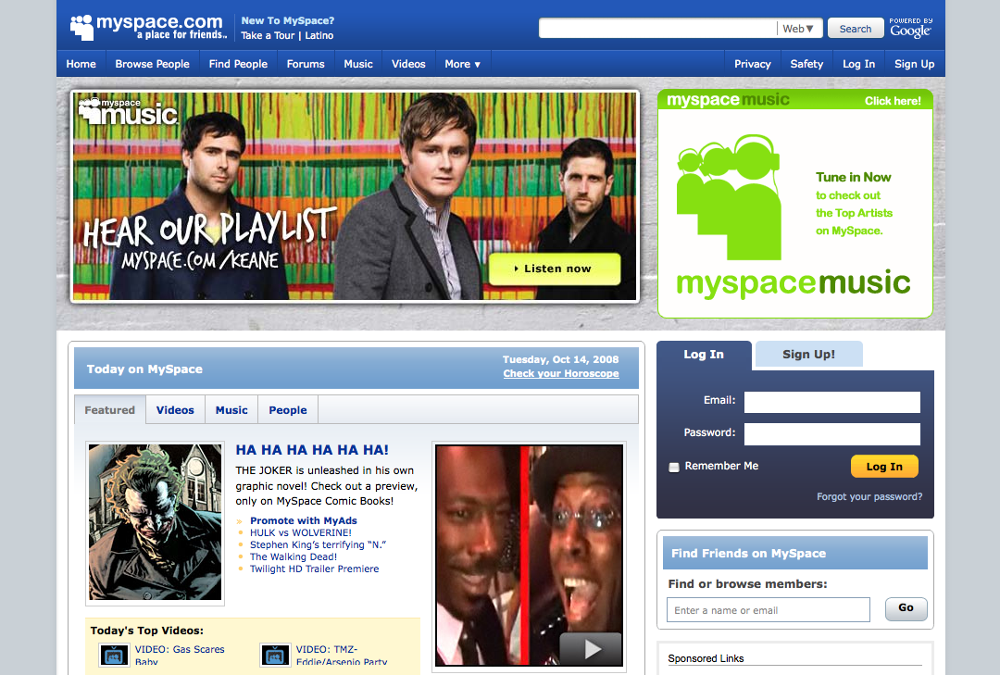
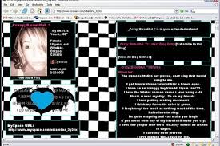
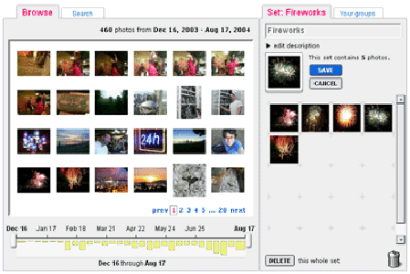
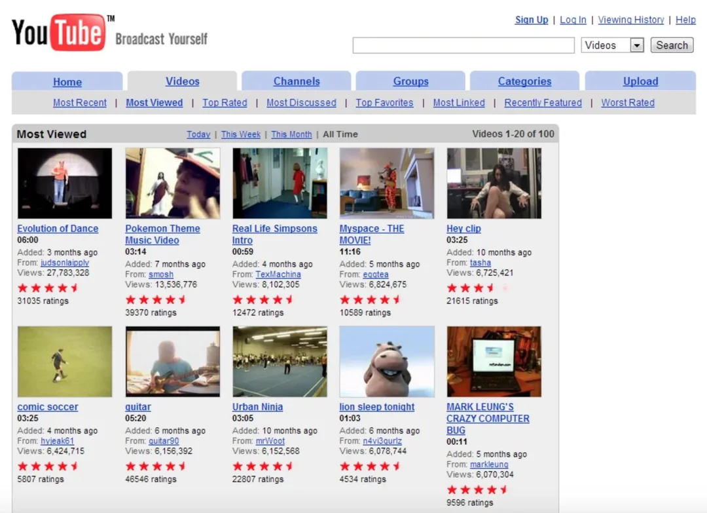
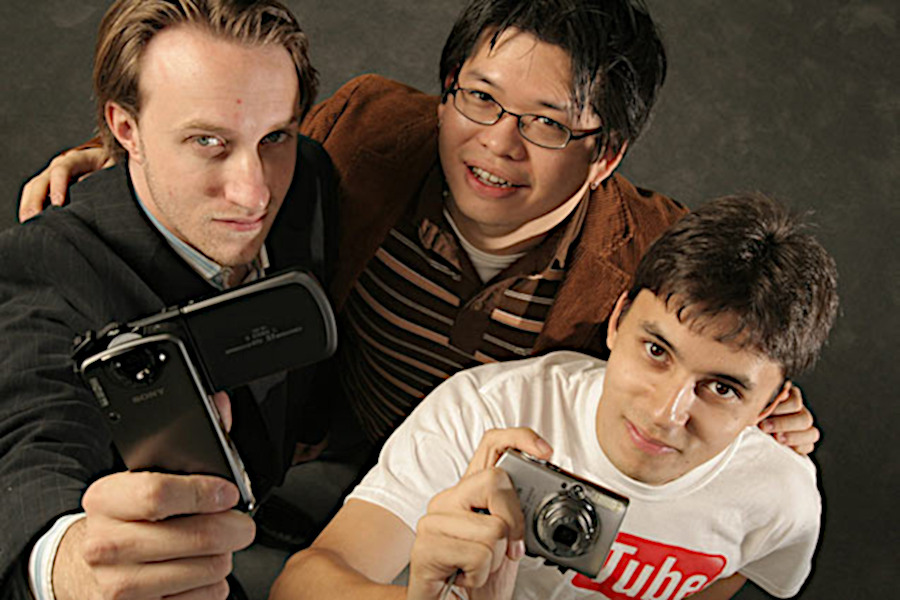
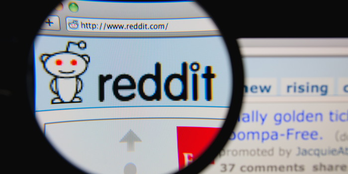
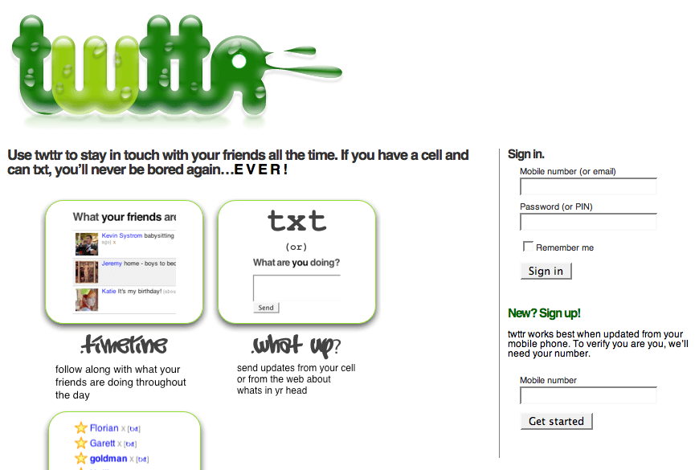

📋 Resumo
Se os anos 90 consolidaram a internet como um espaço de informação e comunicação, a metade dos anos 2000 redefiniu tudo ao transformar a Web em um ecossistema social, colaborativo, dinâmico e guiado pelo conteúdo criado pelos próprios usuários. É aqui que nascem — de maneira organizada e institucional — os pilares da vida digital contemporânea: redes sociais, blogs profissionais, plataformas de vídeo, sites interativos, mecanismos avançados de busca, feeds, personalização, recomendação algorítmica e a ideia de que qualquer pessoa pode produzir e publicar conteúdo globalmente.
📚 Detalhes
Nesse mesmo período, plataformas como MySpace também explodiram em popularidade, especialmente entre jovens, artistas independentes e comunidades musicais. MySpace representava um tipo de liberdade estética e identitária que marcou profundamente a cultura jovem dos anos 2000. Era possível personalizar completamente o perfil com HTML, CSS rudimentar, GIFs, músicas, fotos e textos. Essa personalização radical, acompanhada pela explosão de bandas independentes que usavam a plataforma para divulgar seu trabalho, transformou o MySpace em um fenômeno cultural global. O Facebook, mais padronizado e “limpo”, representava o futuro corporativo e institucional da internet; já o MySpace representava a estética livre e caótica da Web 2.0 em sua fase inicial.


Mas o início da Web 2.0 não se resume às redes sociais. Em 2004 também nasce o Flickr, que revolucionou o compartilhamento de imagens. Ele introduziu o uso massivo de tags, comentários, álbuns colaborativos e licenças Creative Commons no ambiente digital. Isso transformou completamente o modo como fotos circulavam na Web e influenciou gerações de artistas e fotógrafos amadores.

No mesmo período, os blogs explodiram — não mais como diários pessoais, mas como veículos de informação profissional, jornalística e opinativa. Plataformas como Blogger, WordPress (fundado em 2003, consolidado entre 2004–2006), TypePad e LiveJournal abriram espaço para que qualquer pessoa se tornasse escritora, jornalista, analista político, crítico cultural ou criadora de conteúdo. Pela primeira vez, grandes jornais começaram a competir diretamente com blogueiros independentes, muitos dos quais conquistaram enorme influência na opinião pública. Surgiram também os primeiros “influenciadores digitais”, ainda que esse termo não existisse na época.
O ano de 2005, entretanto, trouxe talvez o maior impacto cultural da década: o nascimento do YouTube. Criado por Steve Chen, Jawed Karim e Chad Hurley, o YouTube surgiu como uma plataforma simples: permitir que qualquer pessoa enviasse vídeos e os compartilhasse com facilidade. Até então, postar vídeos na internet era extremamente difícil. Requeria conhecimentos técnicos, servidores robustos e tempo de carregamento muito longo. O YouTube eliminou essas barreiras e inaugurou a cultura do vídeo online — um movimento tão profundo que mudaria o jornalismo, a educação, a música, o entretenimento e a política.


O primeiro vídeo da plataforma, “Me at the Zoo”, publicado por Jawed Karim em abril de 2005, é considerado o marco simbólico da transição para a era do vídeo digital. Em apenas um ano, a plataforma cresceu tão rapidamente que chamou a atenção do Google, que a adquiriu em 2006 por 1,65 bilhão de dólares — uma das compras mais emblemáticas da história da tecnologia. O YouTube inaugurou a cultura dos “vlogs”, dos tutoriais, das séries amadoras, dos clipes independentes, dos virais, da música digital e, posteriormente, dos influenciadores de vídeo.
Enquanto isso, o Google consolidava seu domínio como mecanismo de busca. Em 2004, o Gmail foi lançado, introduzindo 1 GB de armazenamento gratuito — algo revolucionário para a época — e inaugurando a era dos webapps. Em 2005, o Google Maps iniciou a digitalização cartográfica mundial. Em 2006, surgem os primeiros passos do Google Docs. A empresa deixava de ser apenas um buscador e se transformava numa infraestrutura digital completa, com mapas, e-mails, documentos, calendários e ferramentas de produtividade.

Outro marco essencial desse período é o surgimento do Reddit (2005), que introduziu o modelo de comunidades organizadas, votação de posts e curadoria coletiva. Ele representava a ideia de inteligência coletiva proposta pela Web 2.0: conteúdo relevante não era decidido por editores, mas pelas próprias pessoas em conjunto.

Em 2006, outro fenômeno nasce: o Twitter. Embora ainda limitado a 140 caracteres, o Twitter introduziu o conceito de microblogging e transformou a comunicação online num fluxo constante de mensagens curtas, rápidas e em tempo real. Esse formato inaugurou uma nova forma de jornalismo instantâneo, mobilizações sociais, conversas públicas e viralização de ideias.

Esse período também coincide com transformações sociais profundas. Pessoas começaram a viver parte substancial de suas identidades online: fotos, posts, relacionamentos, discussões, gostos musicais, hobbies e opiniões passaram a existir dentro de plataformas digitais. A noção de “vida social online”, que havia começado nos chats dos anos 90, assume agora uma forma muito mais pública e duradoura. As redes sociais criam comunidades inteiramente novas, que não dependem de localidade geográfica. Jovens passam horas no MySpace, adolescentes criam blogs pessoais, fotógrafos amadores constroem portfólios no Flickr, e criadores iniciantes publicam seus primeiros vídeos no YouTube.
A Web 2.0 também introduz o conceito de viralização — conteúdos que se espalham rapidamente pela rede sem controle central. Vídeos engraçados, memes, músicas caseiras e blogs populares começavam a romper fronteiras, transformando pessoas comuns em celebridades digitais.
Do ponto de vista técnico, tecnologias como AJAX, feeds RSS, APIs e servidores mais robustos tornam a navegação mais fluida, permitindo atualizações assíncronas e interações instantâneas sem recarregamento de página. Esses avanços definem o design moderno dos sites. Pela primeira vez, a Web se aproxima da sensação de “aplicativos”, abrindo caminho para a futura explosão dos apps móveis com a chegada do iPhone em 2007.
Culturalmente, esse período é associado a uma mistura de otimismo tecnológico e experimentação criativa. A internet parecia infinita, aberta e cheia de possibilidades. Era uma época em que as pessoas acreditavam que a Web 2.0 democratizaria o conhecimento, humanizaria a tecnologia e criaria espaços igualitários de expressão.
O período 2004–2006, portanto, marca o nascimento das bases socioculturais da internet moderna: redes sociais estruturadas, cultura do vídeo, blogs, plataformas colaborativas, algoritmos de conteúdo e a noção de que estar online é fazer parte de uma comunidade global. Tudo o que viria depois — influenciadores, streaming, memes, apps móveis, webshows, ativismo digital — começa aqui.
"Me at the zoo" primeiro vídeo no Youtube
Video: https://www.youtube.com/watch?v=jNQXAC9IVRw
.
Download: The True Story of the Internet — parte “People Power”
Mídia: https://www.youtube.com/watch?v=iInFcimLgbI
.
Arquivos de páginas históricas / sites antigos — Wayback Machine
Site: https://web.archive.org/
.🔗 Fontes de Pesquisa